基礎題
小銘在 25℃ 的室溫下以體溫計置於腋下，量得體溫為 37.3℃。下列哪一項為身體將熱量傳給體溫計的原因？
- (A) 人體的質量較大
- (B) 人體含熱量較多
- (C) 人體的溫度較高
- (D) 人體的比熱較大
看答案與詳解
答案：(C)
(A) ✘ 質量大小不決定傳熱方向。
(B) ✘ 熱量是因溫度差而轉移的能量，不能說物體「含有」多少熱量。
(C) ✔ 人體 37.3℃ 高於體溫計（原本約室溫 25℃），熱量由人體傳給體溫計。
(D) ✘ 比熱只影響溫度改變的快慢，不決定傳熱方向。
取溫度、材質及體積相同的甲、乙兩金屬球，將甲球漆成白色，乙球漆成黑色，再將兩球以細線並排懸吊於空中，放置在陽光下曝曬，20 分鐘後測量兩者溫度，結果乙球比甲球高 3℃，下列何者是此現象發生的主要原因？
- (A) 白色可增加金屬球的比熱
- (B) 黑色可增加金屬球的比熱
- (C) 白色金屬球較易吸收輻射熱
- (D) 黑色金屬球較易吸收輻射熱
看答案與詳解
答案：(D)
(A)(B) ✘ 漆的顏色不會改變金屬的比熱。
(C) ✘ 淺色表面較難吸收輻射熱。
(D) ✔ 深色（黑色）表面較易吸收輻射熱，同時間吸收的熱量較多，溫度較高。
小妮在室溫下將一支金屬湯匙及一支塑膠湯匙同時插入剛買來的冰淇淋兩側，如附圖所示。經過幾分鐘後，發覺金屬湯匙附近融化的冰淇淋量較塑膠湯匙附近的多，則發生此現象的主要原因最可能是下列何者？
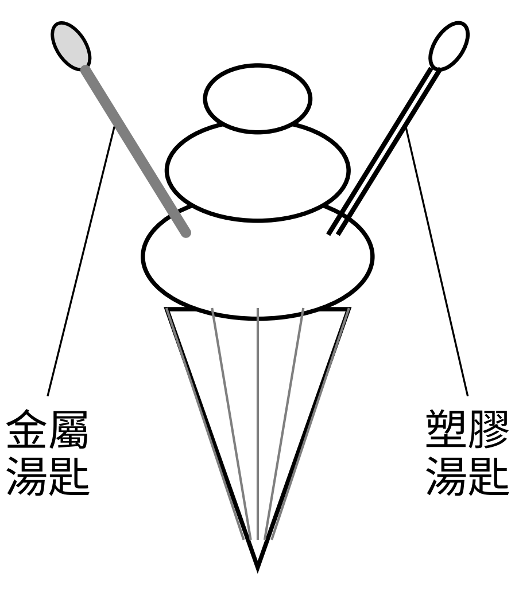
- (A) 因為比熱大小：金屬湯匙＞塑膠湯匙
- (B) 因為比熱大小：金屬湯匙＜塑膠湯匙
- (C) 因為熱的傳導效果：金屬湯匙＞塑膠湯匙
- (D) 因為熱的傳導效果：金屬湯匙＜塑膠湯匙
看答案與詳解
答案：(C)
(A)(B) ✘ 此現象的關鍵是熱量傳遞的快慢，不是比熱。
(C) ✔ 金屬是熱的良導體，傳導效果比塑膠好，把外界熱量較快傳進冰淇淋。
(D) ✘ 塑膠是熱的不良導體。
「淬火」是一種金屬的處理工法，其是將金屬製品（如刀、劍）加熱至高溫，隨即浸入水中急速冷卻，可用來提高合金的硬度和強度。阿吉師在進行淬火時，發現當燒紅的刀身浸到水中後，水會在很短的時間內沸騰，則刀身將熱量傳遞給水的方式與熱量在水中的傳播方式，主要分別為何？（選項依序為：刀身將熱量傳遞給水的方式；熱量在水中的傳播方式）
- (A) 輻射；傳導
- (B) 傳導；輻射
- (C) 傳導；對流
- (D) 對流；傳導
看答案與詳解
答案：(C)
(A)(B)(D) ✘
(C) ✔ 傳導；對流。
依據反應物、產物和熱量的關係，將反應分為以下兩類：①：反應物 → 產物＋熱量（能量）；②：反應物＋熱量（能量）→ 產物。已知煙火爆炸會發出光和熱，下列關於「煙火爆炸」的反應分類說明，何者正確？
- (A) 與酸鹼中和一同歸類屬於①
- (B) 與酸鹼中和一同歸類屬於②
- (C) 與光合作用一同歸類屬於①
- (D) 與光合作用一同歸類屬於②
看答案與詳解
答案：(A)
煙火爆炸發出光和熱 → 放熱反應 → 屬於 ①。
酸鹼中和會放熱 → 屬於 ①；光合作用需吸收光能 → 屬於 ②。
(A) ✔ (B)(C)(D) ✘
阿銘想設計一個實驗來比較兩種未知液體的比熱大小。他的實驗構想如下：分別加熱兩種液體，經過相同的時間後溫度上升較多者其比熱較小。若要實踐他的實驗構想，則需要再加上的實驗條件不包含下列何者？
- (A) 兩種液體的質量相同
- (B) 兩種液體的體積相同
- (C) 加熱兩種液體的方法相同
- (D) 加熱兩種液體時實驗室環境條件相同
看答案與詳解
答案：(B)
(A) ✔ 需要：質量必須相同。
(B) ✘ 不需要：兩液體密度不同，體積相同時質量反而不同，此條件不必要（也不恰當）。
(C) ✔ 需要：加熱方法相同，同時間吸收的熱量才相同。
(D) ✔ 需要：環境相同，散失的熱量才相近。
故不包含的是 (B)。
小建自製溫度計，他在試管中裝滿 25℃ 的水後滴入數滴紅墨水，再用附有玻璃管的橡皮塞塞住試管口，此時玻璃管內的液面會稍微高出橡皮塞，如圖(五)所示。小建將此溫度計放到某一環境中，發現玻璃管內液面逐漸上升，則液面上升的主要原因為下列何者？
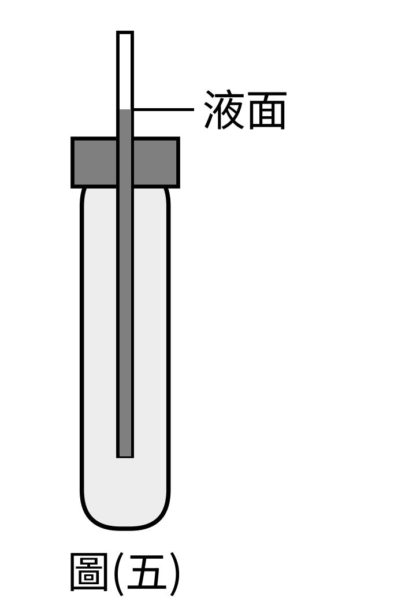
- (A) 水的體積與密度均變大
- (B) 水的質量與體積均變大
- (C) 水的質量變大、密度變小
- (D) 水的體積變大、密度變小
看答案與詳解
答案：(D)
水的質量不變、體積變大 → 密度＝質量÷體積變小。
(A) ✘ 密度變小。(B)(C) ✘ 質量不變。(D) ✔
小華將質量 400 g 的油與質量 100 g 的水（比熱為 1 cal／g．℃），分別以相同的熱源加熱，加熱相同時間後，溫度皆由 20℃ 上升至 60℃，假設加熱過程中熱量沒有散失，試問油的比熱應為多少（cal／g．℃）？
- (A) 0.25
- (B) 2
- (C) 0.5
- (D) 4
看答案與詳解
答案：(A)
400×s×(60－20)＝100×1×(60－20)
400s＝100 → s＝0.25 cal／g．℃ → (A)
〔易錯〕溫度變化相同時，比熱與質量成反比，質量是水的 4 倍，比熱就是水的 1／4。
某液體的部分性質如表所示，小嘉將 500 cc 的某液體倒入杯子中，剛倒入時，測得溫度為 96℃，5 分鐘後溫度降至 85℃，則在此降溫過程中，某液體共放出多少熱量？
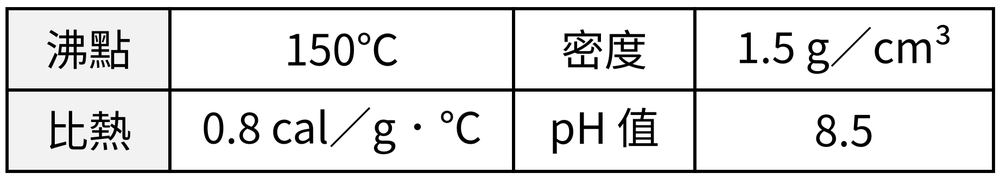
- (A) 1100 卡
- (B) 4400 卡
- (C) 5500 卡
- (D) 6600 卡
看答案與詳解
答案：(D)
② ΔT＝96－85＝11℃
③ H＝m×s×ΔT＝750×0.8×11＝6600 卡 → (D)
〔易錯〕500 cc 是體積，要先乘密度換成質量；沸點、pH 值是多餘的資料。
進階題
在固定壓力改變溫度的實驗中，測得純物質 X 的甲、乙、丙三種不同狀態，如圖所示。甲、乙、丙分別為物質三態中的哪一種？
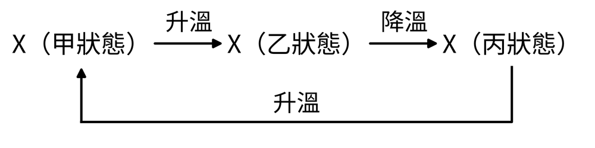
- (A) 甲：固態，乙：液態，丙：氣態
- (B) 甲：固態，乙：氣態，丙：液態
- (C) 甲：液態，乙：固態，丙：氣態
- (D) 甲：液態，乙：氣態，丙：固態
看答案與詳解
答案：(D)
(A) ✘ 乙（液）降溫不會變成丙（氣）。
(B) ✘ 丙（液）升溫不會變成甲（固）。
(C) ✘ 甲（液）升溫不會變成乙（固）。
(D) ✔ 甲（液）升溫 → 乙（氣）（汽化）；乙（氣）降溫 → 丙（固）（凝華）；丙（固）升溫 → 甲（液）（熔化）。
已知銅為熱脹冷縮的金屬，若右圖為一銅塊在溫度改變時，原子排列的變化情形，則溫度與此銅塊密度的變化，下列何者正確？（選項依序為：溫度變化；銅塊密度的變化）
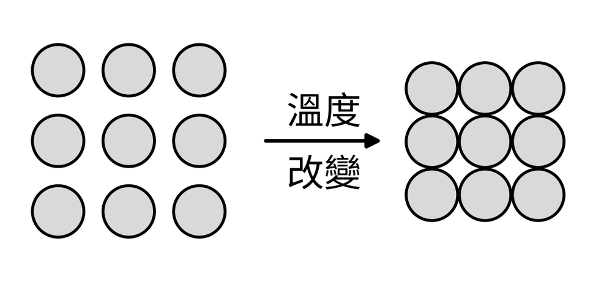
- (A) 降溫；變大
- (B) 降溫；不變
- (C) 升溫；變大
- (D) 升溫；不變
看答案與詳解
答案：(A)
質量不變、體積變小 → 密度變大。
(A) ✔ (B)(C)(D) ✘
某種可重複使用的熱敷袋，其內含有醋酸鈉水溶液和金屬片，使用方法的示意圖如圖(十)所示。使用步驟：1. 使用前按壓金屬片，引發醋酸鈉結晶析出並產生熱，用來熱敷。2. 熱敷後，將已冷卻且因析出結晶而變硬的熱敷袋，放入水內加熱，即可回復原來的澄清狀態。可依此步驟重複再使用。關於上述步驟 2 發生的變化，以及醋酸鈉的溶解度說明，下列何者正確？
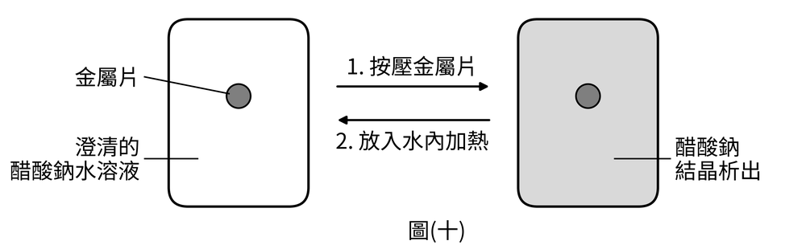
- (A) 步驟 2 為吸熱的變化，溫度升高溶解度會增加
- (B) 步驟 2 為吸熱的變化，溫度升高溶解度會減少
- (C) 步驟 2 為放熱的變化，溫度升高溶解度會增加
- (D) 步驟 2 為放熱的變化，溫度升高溶解度會減少
看答案與詳解
答案：(A)
加熱後結晶溶解、回復澄清 → 溫度升高，醋酸鈉能溶解的量增加 → 溶解度增加。
(A) ✔ (B)(C)(D) ✘
溫度固定為 25℃ 的環境下，一個玻璃杯內裝有 50 g 的純水，剛開始玻璃杯與純水的溫度皆為 45℃，一段時間後，兩者皆與環境達熱平衡。若此降溫過程中，純水散失的熱量與玻璃杯散失的熱量相等，且水的蒸發忽略不計，已知純水與玻璃的比熱分別為 1.0 cal／g．℃ 與 0.2 cal／g．℃，則玻璃杯的質量應為多少？
- (A) 10 g
- (B) 50 g
- (C) 100 g
- (D) 250 g
看答案與詳解
答案：(D)
水散失：50×1.0×20＝1000 cal
玻璃杯散失：m×0.2×20＝4m
4m＝1000 → m＝250 g → (D)
〔易錯〕ΔT 相同、熱量相同時，質量與比熱成反比：玻璃比熱是水的 1／5，質量要是水的 5 倍。
由相同材質組成的甲、乙兩物體，兩者均為固態，分別以相同的穩定熱源均勻加熱，其質量、上升溫度與加熱所需的時間如表所示。若甲、乙兩物體在加熱過程中，溫度均未達到熔點，熱源所提供的熱量均被兩者完全吸收，則表中的 X 應為多少？
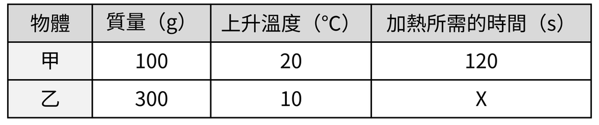
- (A) 60
- (B) 120
- (C) 180
- (D) 360
看答案與詳解
答案：(C)
甲：m×ΔT＝100×20＝2000；乙：m×ΔT＝300×10＝3000
時間比＝熱量比：120：X＝2000：3000 → X＝180 s → (C)
〔易錯〕乙的質量是 3 倍，但升溫只有一半，所需熱量是甲的 1.5 倍，不是 3 倍。
分別取 10℃、200 克的水和甘油，利用相同的穩定熱源加熱，得到結果如表(三)，假設加熱過程中無熱量散失，下列哪一項無法根據此表格求出？（水的比熱為 1 卡／克．℃）
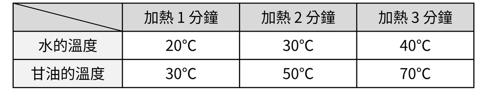
- (A) 熱源每分鐘提供的熱量
- (B) 甘油的比熱
- (C) 甘油每分鐘吸收的熱量
- (D) 甘油的沸點
看答案與詳解
答案：(D)
(A) ✔ 可求：200×1×10＝2000 卡／分鐘。
(C) ✔ 可求：同熱源、無散失 → 甘油每分鐘也吸收 2000 卡。
(B) ✔ 可求：2000＝200×s×20 → s＝0.5 卡／克．℃。
(D) ✘ 表中甘油到 70℃ 仍持續升溫，沒有出現溫度不變的沸騰段，無法求出沸點。
本題選無法求出者 → (D)。
小永想煮石頭火鍋，他把比熱為 0.2 cal／g．℃ 的石頭加熱到 220℃，再將其丟入 1 公升 25℃ 的水中，使其沸騰。假設過程無熱量散失，請問他該拿至少幾公斤的石頭呢？（選最接近且可以使水沸騰的答案）
- (A) 2.8 kg
- (B) 3 kg
- (C) 3.2 kg
- (D) 3.4 kg
看答案與詳解
答案：(C)
水吸熱：1000×1×(100－25)＝75000 cal
石頭放熱：m×0.2×(220－100)＝24m
24m＝75000 → m＝3125 g≒3.1 kg
需「至少」3.125 kg：2.8 kg、3 kg 不夠，選最接近且足夠的 3.2 kg → (C)
今取四個不同條件的金屬塊甲、乙、丙、丁，四者條件的資訊如表(八)所示。四個金屬塊放置在室溫 20℃ 的環境下一段時間後，四者的溫度均降為 20℃。甲、乙、丙、丁四個金屬塊由初始溫度降至 20℃ 時，何者所散失的熱量最多？
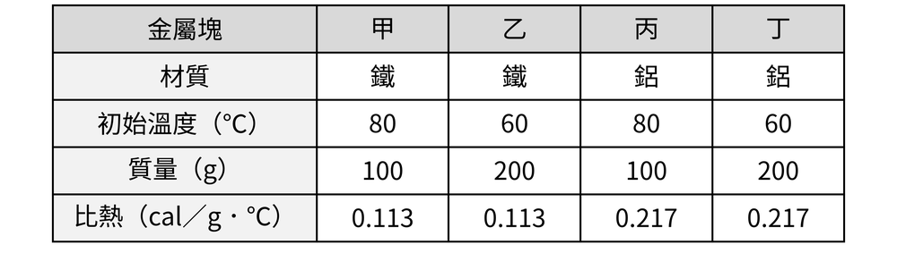
- (A) 甲
- (B) 乙
- (C) 丙
- (D) 丁
看答案與詳解
答案：(D)
甲：100×0.113×60＝678 cal
乙：200×0.113×40＝904 cal
丙：100×0.217×60＝1302 cal
丁：200×0.217×40＝1736 cal（最多）→ (D)
〔易錯〕初溫最高的甲、丙不一定散熱最多，要三項相乘再比。
在一大氣壓下，甲、乙、丙三鋁塊質量分別為 M甲、M乙、M丙，已知三者最初的溫度不同，吸收相同熱量後，到達相同的溫度，如表所示。若三鋁塊在升溫過程中均為固態且無熱量散失，則 M甲：M乙：M丙 為下列何者？
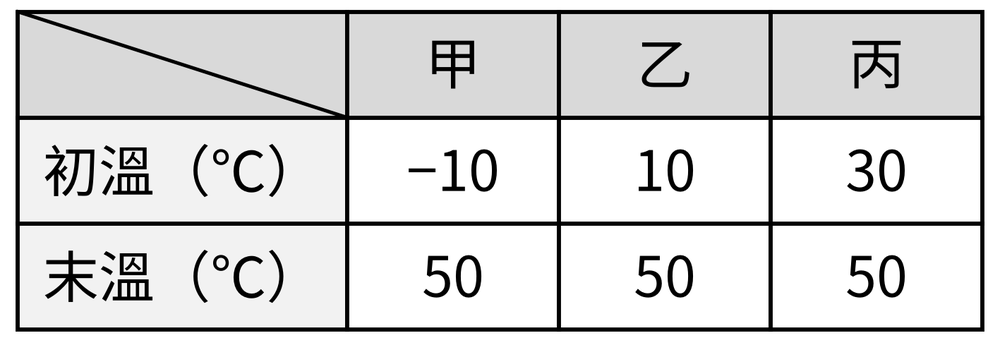
- (A) −1：1：3
- (B) 1：2：3
- (C) 2：3：6
- (D) 3：2：1
看答案與詳解
答案：(C)
ΔT：甲＝50－(−10)＝60℃，乙＝40℃，丙＝20℃
M甲：M乙：M丙＝1／60：1／40：1／20＝2：3：6 → (C)
〔易錯〕(A) 直接拿初溫比；(D) 誤把質量與溫度變化當成正比。
會考／素養題
小敏複製網路上「茶包天燈」這個科學實驗，其流程如圖(二十四)所示。她在無風的環境進行實驗，當實驗進行到最後，茶包燃燒後的灰燼會飄向空中，如同一個小天燈。小敏認為此現象的成因應該與熱對流有關，茶包上方的空氣受到加熱而上升時，周圍的冷空氣遞補而形成熱對流，茶包灰燼因重量很輕而受到空氣的帶動飄向空中。根據本文，若小敏在向同學說明「茶包天燈」成因後，想要再舉一個科學原理相同的例子，則下列何者最合適？
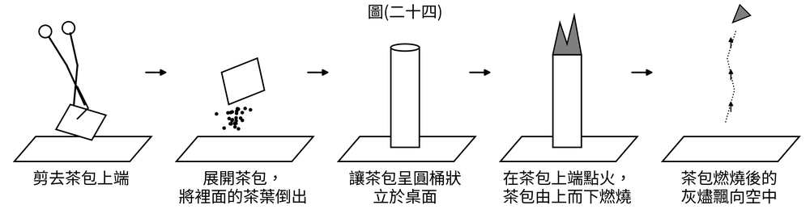
- (A) 太陽將熱能傳播至地球
- (B) 冷氣機裝在房間較高處
- (C) 瓦斯儲氣槽或儲油槽漆成淺色
- (D) 鍋子的把手通常使用木頭或塑膠材質
看答案與詳解
答案：(B)
(A) ✘ 太陽經由真空傳熱 → 輻射。
(B) ✔ 冷氣吹出的冷空氣密度大而下降，熱空氣上升被冷氣機吸入，形成對流 → 熱對流。
(C) ✘ 淺色減少吸收輻射熱 → 輻射。
(D) ✘ 木頭、塑膠是熱的不良導體 → 傳導。
小樺在氣溫 27℃ 及 17℃ 時的手部皮膚溫度分別如圖(十四)所示。表(三)是四種不同品牌零食開始熔化的溫度。正常體溫的情況下，若小樺希望「在 27℃ 及 17℃ 兩種氣溫下，零食拿在手上都不會熔化，但放入口中卻都會熔化」，則下列哪一品牌最符合他的期待？
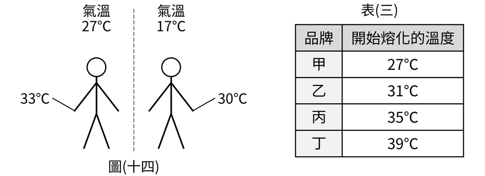
- (A) 甲
- (B) 乙
- (C) 丙
- (D) 丁
看答案與詳解
答案：(C)
放入口中會熔化 → 開始熔化的溫度要低於體溫（約 37℃）。
33℃＜熔化溫度＜37℃ → 丙（35℃）→ (C)
(A)(B) ✘ 27℃、31℃ 在 27℃ 氣溫下拿在手上（33℃）就會熔化。
(D) ✘ 39℃ 高於體溫，放入口中不會熔化。
2019 年擁有 800 多年歷史的「巴黎聖母院」遭大火吞噬。火勢迅速蔓延的主要原因是因內部木製建築構造及高聳的尖塔引起的煙囪效應。所謂煙囪效應是指空氣受熱體積膨脹，密度變小、變輕而上升，熱氣流於樓梯、管道間或垂直通道，經由上方開口流出，而冷空氣由下方開口進入，如此循環加大火勢。試問下列敘述，何者錯誤？
- (A) 大樓發生火災時，頂樓防火門應關閉
- (B) 煙囪效應為熱輻射現象
- (C) 電梯井或樓梯間皆為產生煙囪效應的空間
- (D) 大樓高度愈高，煙囪效應愈明顯
看答案與詳解
答案：(B)
(A) ✔ 正確：關閉防火門可阻斷熱氣流的通道，減弱對流。
(B) ✘ 錯誤：煙囪效應是熱對流，不是熱輻射。
(C) ✔ 正確：電梯井、樓梯間是垂直通道，可形成煙囪效應。
(D) ✔ 正確：垂直通道愈高，上下冷熱空氣的差異愈大，對流愈明顯。
題目問錯誤者 → (B)
如圖為小毅某次考卷的部分內容。此題小毅答錯，老師要他回去訂正，則他只需修改第一行算式中的哪一個數值，就能獲得正確答案？
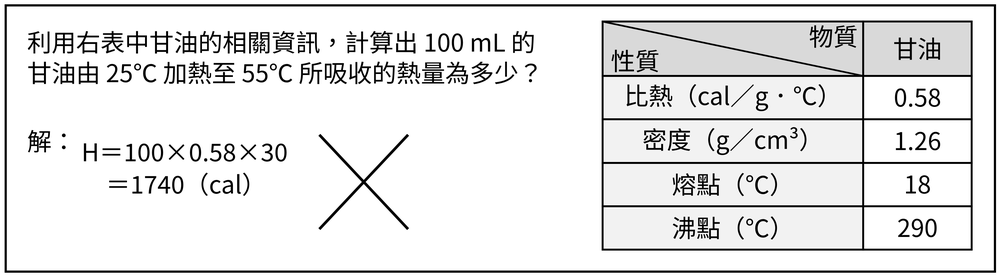
- (A) 將 100 改為 126
- (B) 將 0.58 改為 1.26
- (C) 將 30 改為 25
- (D) 將 30 改為 55
看答案與詳解
答案：(A)
甘油質量＝100 mL×1.26 g／cm3＝126 g（1 mL＝1 cm3）
正確算式：H＝126×0.58×30＝2192.4 cal → 只需把 100 改為 126 → (A)
(B) ✘ 1.26 是密度，不是比熱。
(C)(D) ✘ ΔT＝55－25＝30℃ 本來就正確。
人體真正感受到的溫度稱為體感溫度，而酷熱指數是其中一種綜合氣溫和溼度來代表體感溫度的指數。人體透過排汗來降溫，過程中「水分會蒸發並從人體帶走熱量」，當環境未能及時將人體多餘熱量帶走時，可能會使人出現中暑等症狀，故從事戶外活動時可參考酷熱指數，以避免中暑。關於文中引號內所提到的現象，下列敘述何者正確？
- (A) 為吸熱的變化，水分子內的原子會重新排列
- (B) 為吸熱的變化，水分子內的原子不會重新排列
- (C) 為放熱的變化，水分子內的原子會重新排列
- (D) 為放熱的變化，水分子內的原子不會重新排列
看答案與詳解
答案：(B)
蒸發是物理變化，只是水分子間的距離變大，水分子本身（H2O）沒有改變，原子不會重新排列。
(B) ✔
(A)(C) ✘ 原子重新排列是化學變化。(C)(D) ✘ 蒸發是吸熱。
〔易錯〕吸熱、放熱不是化學變化專有，狀態變化也會吸熱或放熱。
阿誠在實驗室測量甲、乙、丙三組裝置的溫度，其組成如圖(六)所示，已知此三組裝置的容器規格相同，內含物的總質量也相同，實驗室的大氣壓力為 1 大氣壓，則下列何者說明最正確？
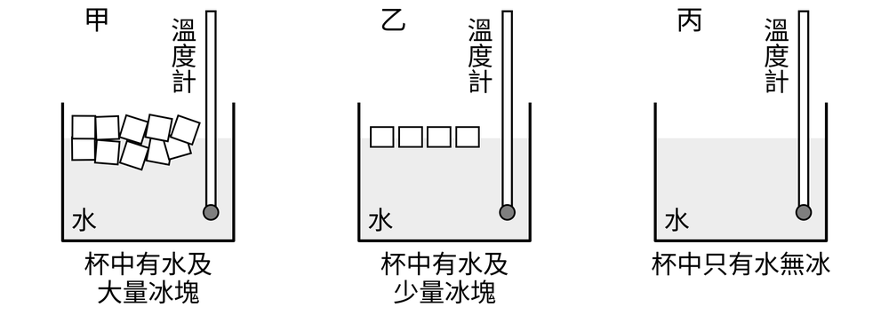
- (A) 阿誠測量甲裝置的溫度有可能測到 32℉
- (B) 三組裝置中，液體水的質量均相同
- (C) 若阿誠仔細測量乙、丙裝置的溫度，不可能測到相同的溫度
- (D) 阿誠用相同的加熱器加熱三組裝置，直到三者都恰好沸騰為止，若無熱量散失的情況下，則三者的加熱時間會相同
看答案與詳解
答案：(A)
(A) ✔ 甲是冰水共存，溫度 0℃＝32℉。
(B) ✘ 總質量相同，但冰塊的量不同，液態水的質量也不同。
(C) ✘ 乙為 0℃；丙只有水，若水溫恰為 0℃（例如冰剛好全部熔化）就可能與乙相同。
(D) ✘ 冰塊熔化需要吸熱，冰愈多需要的熱量愈多，加熱時間不同。
在一大氣壓下，甲、乙、丙、丁四組實驗中的容器內分別裝有一支溫度計及冰或水，當四組實驗分別達熱平衡時，如圖所示。已知此時其中一支溫度計的溫度顯示為 4℃，則此溫度計應屬於哪一組實驗？
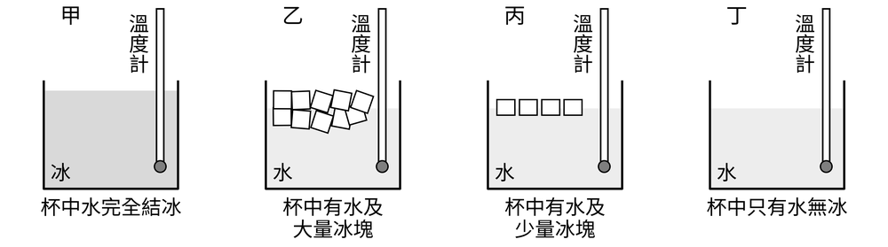
- (A) 甲
- (B) 乙
- (C) 丙
- (D) 丁
看答案與詳解
答案：(D)
甲：水完全結冰 → 溫度在 0℃ 以下。
乙、丙：冰與水共存且達熱平衡 → 溫度必為 0℃（冰多冰少都一樣）。
丁：只有水、沒有冰 → 溫度可以高於 0℃，可能是 4℃。
故 4℃ 的溫度計屬於丁 → (D)
〔易錯〕乙、丙看似「水在下方」，但只要冰水共存並達熱平衡，整杯就是 0℃，不會是 4℃。